Aqui estão 10 filmes que eu gosto
Detalhes dos Filmes
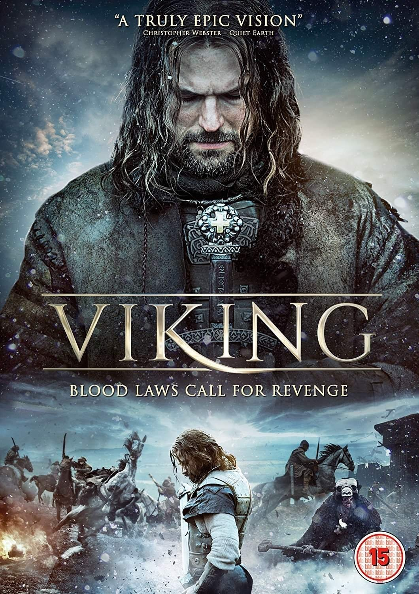 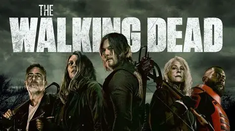
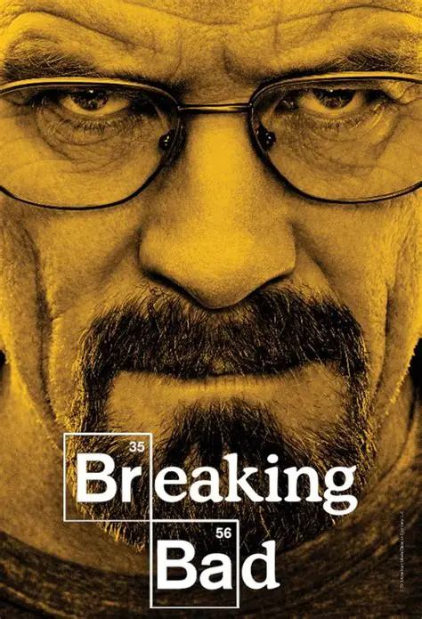
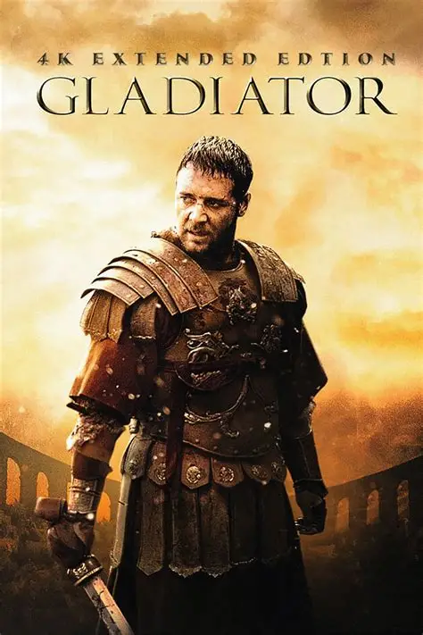
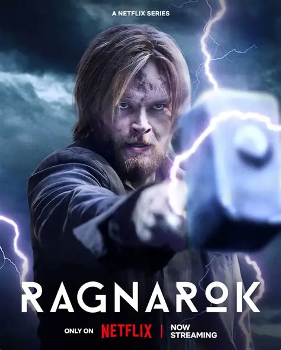
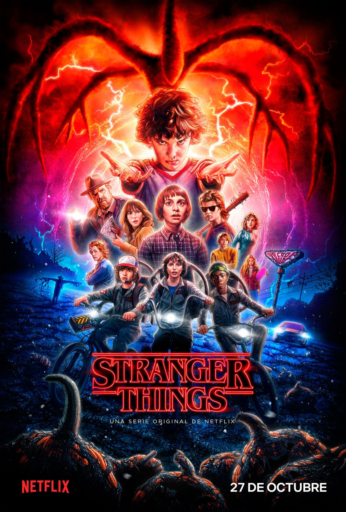
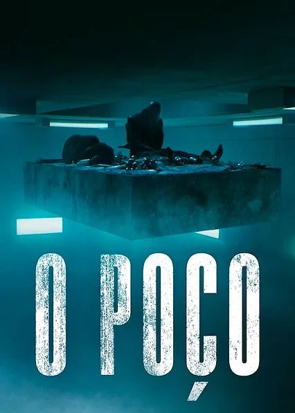
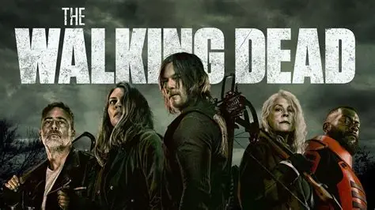
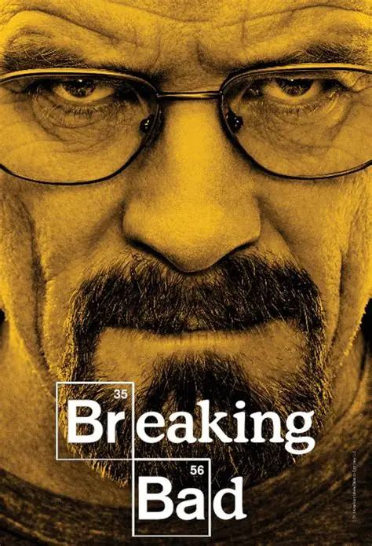
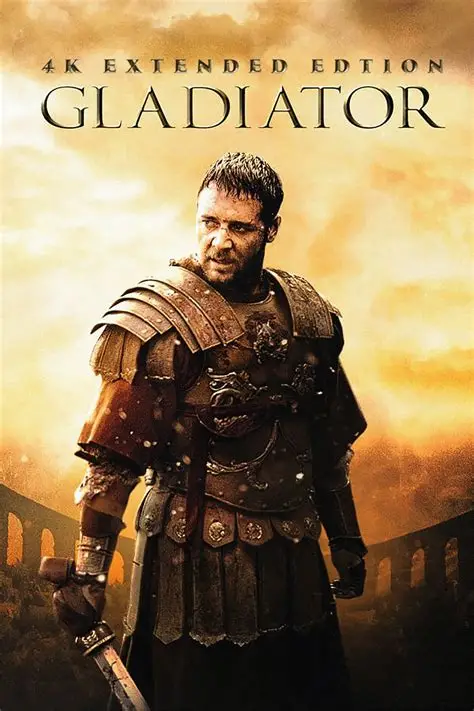
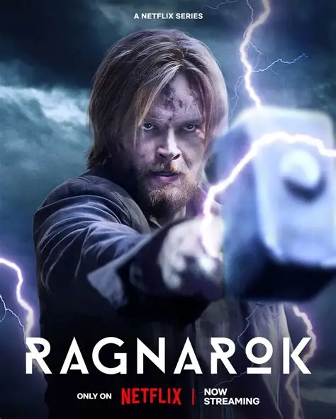
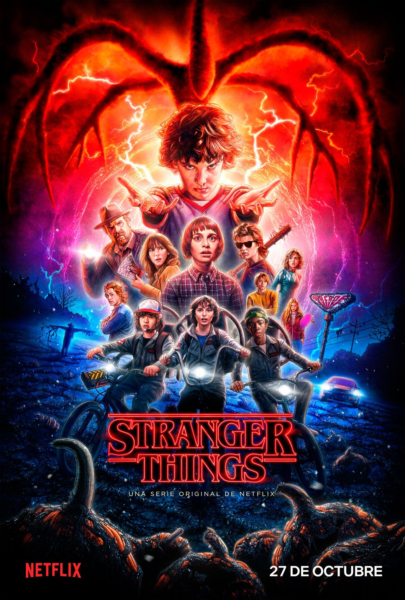
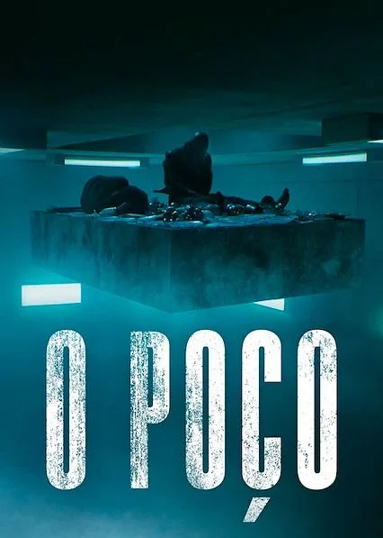
| titulo | autor| Duração |Classificação indicativa
1. Vikings
Tipo: Série
Autor: Michael Hirst
Duração: Cerca de 44-50 minutos por episódio (6 temporadas, total 89 episódios)
Classificação indicativa: 16 anos
2. The Rain
Tipo: Série (dinamarquesa)
Criadores: Jannik Tai Mosholt, Esben Toft Jacobsen, Christian Potalivo
Duração: Cerca de 40-50 minutos por episódio (3 temporadas)
Classificação indicativa: 16 anos
3. The Walking Dead
Tipo: SérieCriadores: Frank Darabont (baseado na HQ de Robert Kirkman)
Duração: Cerca de 40-60 minutos por episódio (11 temporadas)
Classificação indicativa: 18 anos
4. DNA do Crime (original: "Genética do Crime" ou algo similar)
Pode estar se referindo a algum documentário ou filme com nome parecido, mas não encontrei uma obra exata com esse título. Poderia confirmar?5. Breaking Bad
Tipo: SérieCriador: Vince Gilligan
Duração: Cerca de 47 minutos por episódio (5 temporadas, 62 episódios)
Classificação indicativa: 18 anos
6. Gladiador (Gladiator)
Tipo: FilmeDiretor: Ridley Scott
Duração: Aproximadamente 155 minutos
Classificação indicativa: 16 anos
Ano: 2000
7. Batalhão 6888 (The 6888th)
Provavelmente se refere ao filme/série/documentário sobre o 6888th Central Postal Directory Battalion, uma unidade feminina do exército dos EUA na 2ª Guerra.Não há um filme popular amplamente conhecido com esse título específico, mas documentários existem. Pode confirmar?
8. Ragnarok
Tipo: Série (Norueguesa)Criadores: Adam Price
Duração: Cerca de 30-40 minutos por episódio (3 temporadas)
Classificação indicativa: 14 anos
9. Stranger Things
Tipo: SérieCriadores: Irmãos Duffer
Duração: Cerca de 45-60 minutos por episódio (5 temporadas previstas, 4 lançadas)
Classificação indicativa: 14 anos
10. O Poço
Tipo: Filme (original: "El Hoyo")
Diretor: Galder Gaztelu-Urrutia
Duração: 94 minutos
Classificação indicativa: 16 anos
Ano: 2019